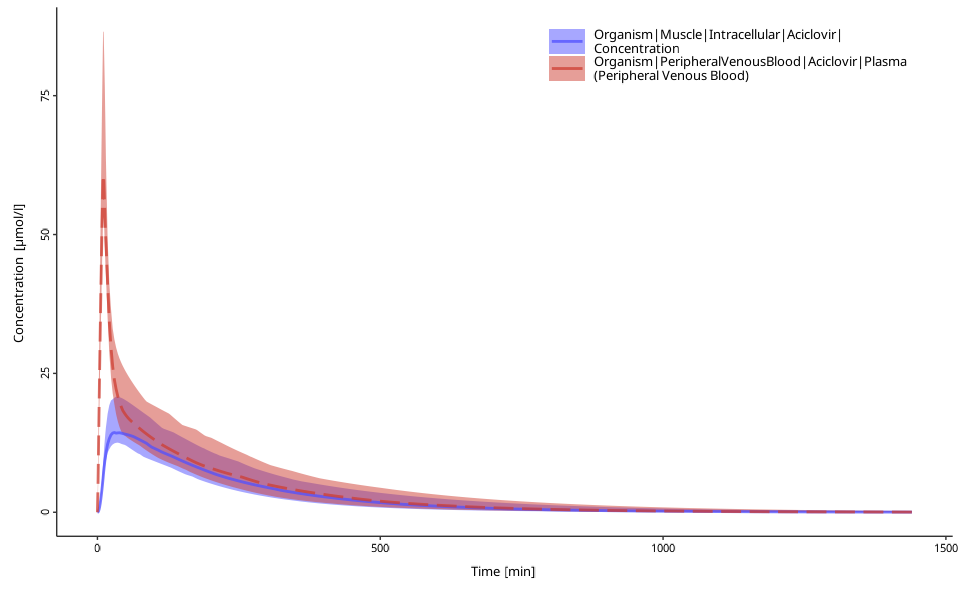
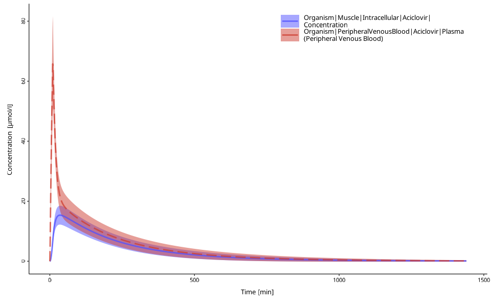

Time-values profile plot for population simulations
Source:R/plot-population-time-profile.R
plotPopulationTimeProfile.RdTime-values profile plot for population simulations
Usage
plotPopulationTimeProfile(
dataCombined,
defaultPlotConfiguration = NULL,
aggregation = "quantiles",
quantiles = c(0.05, 0.5, 0.95),
...
)Arguments
- dataCombined
A single instance of
DataCombinedclass.- defaultPlotConfiguration
A
DefaultPlotConfigurationobject, which is anR6class object that defines plot properties.- aggregation
The type of the aggregation of individual data. One of
quantiles(Default),arithmeticorgeometric(full list inospsuite::DataAggregationMethods). Will replaceyValuesby the median, arithmetic or geometric average and add a set of upper and lower bounds (yValuesLowerandyValuesHigher).- quantiles
A numerical vector with quantile values (Default:
c(0.05, 0.50, 0.95)) to be plotted. Ignored ifaggregationis notquantiles.- ...
additionnal arguments to pass to
.extractAggregatedSimulatedData()
Details
The simulated values will be aggregated across individuals for each time point.
For aggregation = quantiles (default), the quantile values defined in the
argument quantiles will be used. In the profile plot, the middle value
will be used to draw a line, while the lower and upper values will be used
as the lower und upper ranges. For aggregation = arithmetic, arithmetic
mean with arithmetic standard deviation (SD) will be plotted. Use the
optional parameter nsd to change the number of SD to plot above and below
the mean. For aggregation = geometric, geometric mean with geometric
standard deviation (SD) will be plotted. Use the optional parameter nsd to
change the number of SD to plot above and below the mean.
See also
Other plotting:
DefaultPlotConfiguration,
plotIndividualTimeProfile(),
plotObservedVsSimulated(),
plotResidualsVsSimulated(),
plotResidualsVsTime()
Examples
simFilePath <- system.file("extdata", "Aciclovir.pkml", package = "ospsuite")
sim <- loadSimulation(simFilePath)
populationResults <- importResultsFromCSV(
simulation = sim,
filePaths = system.file("extdata", "SimResults_pop.csv", package = "ospsuite")
)
# Create a new instance of `DataCombined` class
myDataComb <- DataCombined$new()
myDataComb$addSimulationResults(populationResults)
# plot
plotPopulationTimeProfile(myDataComb)
# plot with other quantiles
plotPopulationTimeProfile(myDataComb, quantiles = c(0.1, 0.5, 0.9))

# plot with arithmetic mean
plotPopulationTimeProfile(myDataComb,
aggregation = "arithmetic"
)
